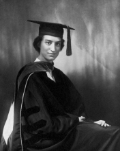

Please note: the AAS Obituaries are temporarily being hosted on this website while their full content is being ingested into the PubPub publishing platform newly adopted by the Bulletin of the American Astronomical Society. When the migration is complete, your existing links will take you to the final, migrated content. Contact peter.williams@aas.org with any questions.
E. Dorrit Hoffleit (1907-2007)
For Ellen Dorrit Hoffleit, who died on 9 April 2007 in New Haven, Connecticut, shortly after her 100th birthday, World War II, in which she did at least her fair share of the work, was "the war," but she also lived through World War I ("the Great War" until she was well into her 30s), Korea, Vietnam, the first Gulf War, and (we hope) most of Iraq.
Hoffleit's early years were difficult, and she described her own life as having led "From Early Sadness to Happy Old Age" (Comments on Astrophysics, 18, p. 107, 1996), with a late autobiography entitled Misfortunes as Blessing in Disguise(American Association of Variable Star Astronomers, 2002). The name Dorrit came from Dickens, but her parents, who called her Dorchen in childhood, were German immigrants, and some of her classmates refused to play with her "because she's German!" Home oscillated between a failing farm in Florence, Alabama, where she was born on 12 March 1907 and rented space in the railroad town of New Castle, Pennsylvania, where her father was a bookkeeper for the Pennsylvania Railroad. Older brother, Herbert (1905-1981) was, perhaps inevitably, the favored child, a precocious student (Harvard PhD at 22) and devoted to that most respectable subject, Latin language and literature, of which he was a professor at UCLA from 1927 (when it was the Southern Branch of the University of California) until his retirement. He took the teaching part of his career more seriously than the research part (though he was not the most memorable of the three Latin professors I had there), but, at a time when Dorrit's publications outnumbered Herbert's by something like fifty to one, she remarked, a little sadly, that the only thing about her that her mother, who lived until 1974, really approved of was her long hair.
Dorrit soon started catching up! She was the only member of the Radcliffe class of 1928 who had taken a graduate course in mathematics. She turned down a better paying job as a statistician to start work the next year as a research assistant (later research associate) at Harvard College Observatory, then directed by Harlow Shapley, about whom her opinion was much warmer than that expressed by Cecilia Payne Gaposchkin. Dorrit's immediate supervisor at Harvard was Henrietta Swope, daughter of the President of General Electric, and eventually best known for work at Mount Wilson Observatory with Walter Baade on variable stars in the Magellanic Clouds, published in papers that continued to appear long after Baade's death.
Hoffleit's first ten papers were also on variable stars and appeared in Harvard Observatory publications. But the MA she completed in 1932 was on the light curves of meteors and was published in the Proceedings of the United States National Academy of Sciences. By this time, Dorrit had established a work pattern that was to persist right up to retirement - at least 40 hours per week on whatever the current boss thought she should be doing, and another 20 or so on other astronomical research that interested her.
Hoffleit had supposed that an MA would be her highest degree, but Shapley urged her to go on for a PhD, with, it would seem, a bit of urging on both sides from Bart Bok, who informed her that "if God recommends that you do something, it is your duty to do it." The thesis (PhD 1938) was on yet a third topic, spectroscopic parallaxes. This means determining the luminosities of stars, hence their distances, from line width and ratio diagnostics in their spectra. The pioneer was Antonia Maury, whose insights were not appreciated by Shapley's predecessor, E. C. Pickering. Another valuable Hoffleit mentor was Ernst Öpik, on a three-month visit to Harvard in 1934, from whom Dorrit learned stellar statistics and half a dozen other things. The thesis also provided her "break out" paper into the Astrophysical Journal (on CN as a giant/dwarf discriminator).
Hoffleit began to branch out into astrometry, comets, and other parts of astronomy and, starting in 1941, began writing about eighty short news notes per year for Volumes 1-15 of the newly formed Sky & Telescope. And then there was a war. Women were not, of course, drafted nor required to find state-side war work to avoid deployment overseas, but Dorrit, still mindful of her German heritage, volunteered. After about six months working under Zdenek Kopal on preparation of firing tables for Navy cannons, she returned briefly to Harvard, having been employed (and paid) at roughly the high-school student level by the Navy. But soon it was on to the Ballistic Research Laboratory of the Army's Aberdeen Proving Ground and another computing job, this time for trajectories of anti-aircraft missiles. The other job opportunity was to measure missile tracks on photographic plates, which she would have preferred, but this would have placed her in the department headed by Edwin P. Hubble. No love was lost between Harvard's Shapley and Mount Wilson's Hubble, partly due to scientific differences, but also partly due to their very different views on what scientists should do in war time, so perhaps is was just as well she ended up in the computing section. There was another stage of fuss and bother to be got through before Dorrit received an appropriate, "professional" (meaning with PhD) rank and the commensurate salary. To the Colonel who complained that women were forever leaving their jobs to get married, she mentioned only her age, and not her early resolve never to marry or to have children, because of a deep worry that they might inherit the mental instability that had led to her maternal grandmother's institutionalization and early death.
By the end of the war, her position, salary, and responsibilities a good match to her skills and credentials, Dorrit willingly put in another three years with the Army, working on reduction of records of "Doppler Velocity and Position" data for the captured V-2s being flown from White Sands Missile Range. But it was not the astronomy she loved, and late 1948 saw her back at Harvard (though with a consultant's appointment at Aberdeen for another ten years), salary cut back by a factor two, but with tenure as an astronomer, a bigger office, and an enormous pile of plates from the Blömfontein station to be measured for spectroscopic parallaxes. She undertook that and a wide range of other projects, with full support from above as long as Shapley was director.
It must mean something that the next director, Donald H. Menzel, who eventually precipitated Hoffleit's departure from Harvard, had also been born in a Florence (Colorado, rather than Alabama), but what really mattered was that he wanted to move Harvard in the direction of his own field of astrophysics and saw no good reason to maintain extensive plate files or people who extracted data from them.
Dorrit went job hunting, and, when the dust had finally settled, she was ensconced in two positions that she would occupy officially for the next twenty years (and unofficially long beyond that). It was in those two contexts that most of us came to know her. Hoffleit became, half-and-half, both director of the Maria Mitchell Observatory from 1957 to 1978 and a research astronomer at Yale (1956 to official 1975 retirement) under its long-term director Dirk Brouwer, where her primary task was to be preparation of astrometric catalogs.
The Observatory directorship first. Maria Mitchell (MMO) was (and is) a small, private observatory on Nantucket Island (Massachusetts) founded as a memorial to the first woman astronomer in the USA by her family and friends. The primary instrument was a 7.5" refractor used (1912-1995) primarily for photographic monitoring of variable stars. Hoffleit proposed to work on some hundreds of her Harvard discoveries, employing for the first time during each summer a small group of undergraduate women to acquire additional plates, measure them, determine periods, and so forth, the results eventually to be published, often in the Journal of the American Association of Variable Star Observers, where MMO papers still turn up, though perhaps not so many as in Dorrit's day. She would also continue education and public outreach activities in the local community that her predecessor, Margaret Harwood, had established.
Summer research experience for undergraduate opportunities have become common, but they were rare in 1957, especially for women students, and the ones who came to MMO (more than one hundred over her term) were undoubtedly very strongly motivated. They left even more so, with the striking result that about 25 of the Hoffleit students became professional astronomers. A few of the earliest are now retired; many remain in stellar astronomy, but others have spread across the Solar System and the galaxies. According to a list compiled by Dorrit, with minor additions, these are, in chronological order: Margo Friedel Aller, Andrea Knudsen Dupree, Barbara Welther, Gretchen Luft Hagen Harris, Nancy Houk, Martha Safford Hanner, Diane Reeve Moorhead, Nancy Remage Evans, Catherine Doremus Garmany, Jane Turner, Jean Warren Goad, Karen Alper Castle, Marcia Keyes Rieke, Judy Karpen, Karen Kwitter, Esther Hu, Bonnie Buratti, Harriet Dinerstein, Melissa McGrath, Constance Phillips Walker, John Briggs, Deborah Crocker, Edward Morgan, and Karen Meech. (The program went co-ed shortly before Dorrit handed it over to Emilia Belserene).
A special paragraph must go to Janet Akyüz Mattei. She came to MMO in the summer of 1969 upon the recommendation of Paris Pismis, an Armenian-Turkish-Mexican astronomer who had known Janet in Turkey and was a very old friend of Dorrit's (and of mine). Janet's own obituary sadly appeared in these pages (BAAS, 36, pp. 1681-82, 2004), the last 30 of her only 61 years having been spent as the director of AAVSO. Among the many important things Janet did in that directorial capacity was to persuade Dorrit Hoffleit to write up the story of her life for publication by AAVSO in 2002, from which much of this material has been taken.
And then there was Yale. "Dorrit Hoffleit?" "You know. The Yale Bright Star Catalogue." Indeed the Yale Bright Star Catalogue: the Third (1964) edition on her own; the Fourth (1982) with Carlos Jaschek; the 1983 Supplement; and the Fifth (1987) edition with W. H. Warren. The value of these would be hard to overestimate. They were cited one hundred or more times per year from 1985 to 1999 (compared, to about twenty citations per year to Annie J. Cannon's HD catalogues and about 600 per year to the multiplet tables of Charlotte E. Moore during the same period). But there were also her contributions to a number of other Yale catalogues of positions and proper motions, and, especially, the 4th edition of the General Catalogue of Trigonometric Parallaxes with W. F. van Altena and J. T. Lee, plus a large number of papers based on subsets of the stars in these catalogues and compilations.
Dirk Brouwer, who had chaired the search committee that selected Hoffleit as director of Maria Mitchell, was also department head and observatory director at Yale when she arrived there. Late in 2006, when Dorrit had become even more forthcoming than in her autobiography, she admitted in an extended phone conversation that he had been a very traditional director, not just primarily committed to positional astronomy (one of her own loves) but also of the opinion that the staff should work primarily on his projects. Yet the unexpected death of Brouwer in January 1966 could have been a disaster. The newly appointed acting director, Rupert Wildt (of H-minus opacity fame) made clear that the future of the department would lie with astrophysics, and he did some firm "deaccessioning" of non-tenured staff in celestial mechanics and astrometry. But when Pierre Demarque took up the chairmanship, making clear that it would not be for the rest of his life, he was very glad to have Hoffleit's programs continue and, in fact, gave her a good deal more freedom to choose then than had Brouwer.
Dorrit used part of that freedom to begin writing about the history of astronomy, first book reviews and obituaries, but soon also articles on the history of variable star astronomy, a long 1993 article on women who had worked in the field (and she included supernovae!), and, most notably, the 1992 volume Astronomy at Yale 1701-1968. Eventually her historical interests were bound to overlap her own lifetime, and her last publication was the written version of a talk she gave at the April 2000 meeting of the American Physical Society on the pioneering women of stellar classification - Fleming, Maury, and Cannon (Physics in Perspective, 4, pp. 367-495, 2002).
Among the honors bestowed upon Hoffleit, primarily rather late in her life, were two DSc's (Smith College 1984, Central Connecticut State University 1998), the George van Biesbroeck Prize (American Astronomical Society and University of Arizona, 1988) for extraordinary service to the astronomical community both as a mentor and as a cataloguer, and an asteroid (3416) in 1987.
With no children or grandchildren of her own, Dorrit established close relationships with her brother's two children, many of the Maria Mitchell "girls," and the children of her younger Yale colleague Robert Zinn. In a slightly more ideal world, this piece would have been written either by Janet Mattei of AAVSO or by Martha (Liller) Hazen, whose friendship with Dorrit went right back to the plate stacks of Harvard. Both predeceased her.
Dorrit once said of Annie J. Cannon that she (AJC) was the happiest person that she (EDH) had ever known. I am not quite sure we can say that, in turn, about Dorrit Hoffleit, but she certainly was in the running. And part of what it made it so wonderful to encounter her was not just that you were glad to see her, but that she was glad to see you.
Obituary written by: Virginia Trimble (University of California-Irvine)
BAAS Citation: BAAS, 2007, 39, 1067
SAO/NASA ADS Bibcode: 2007BAAS...39.1067T